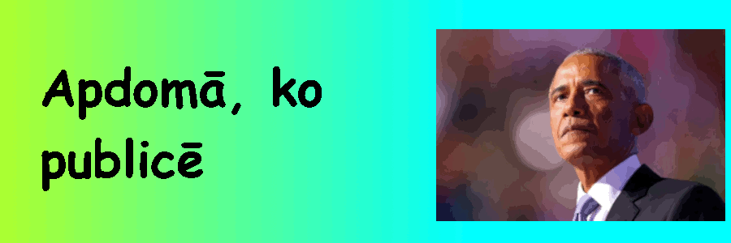

Personas publisko datu saturs un drošība
Personas publisko datu saturs un drošība
Kas ir personas publiskie dati?
Personas publiskie dati ir jebkāda publiski pieejama informācija, ko var izmantot, lai identificētu konkrētu personu.
Tie ietver vārdu, dzimšanas datumu, atrašanās vietu, darba vietu, telefona numuru, ģimeni, paziņas un personīos uzskatus.
Kāpēc personas publiskie dati ir svarīgi?
Tie ir svarīgi, jo tos var izmantot ļaunprātīgiem mērķiem, kā arī tā var būt informācija, ko tu apzināti nevēlētos padarīt publisku.
Kā pasargāt savus datus?
Lai pasargātu savus datus, vajag vienmēr apdomāt pirms ar kaut ko dalies internetā, jo to nekad nevarēs izdzēst. Arī nepieciešams izmantot drošas paroles un multi faktoru autentifikāciju.
Un noderīgi ir pārbaudīt savus privātuma iestatījumus, lai atslēgtu nevajadzīgus "cepumus" un citus tīmekļa datu vācējus.
Pēdīgi, ja ir kāda problēma, noteikti vajag atcerēties, ka vari par to aprunāties ar tuvajiem vai ziņot par to platformai un policijai.

Avoti
https://en.wikipedia.org/wiki/Open_data
https://en.wikipedia.org/wiki/HTTP_cookie